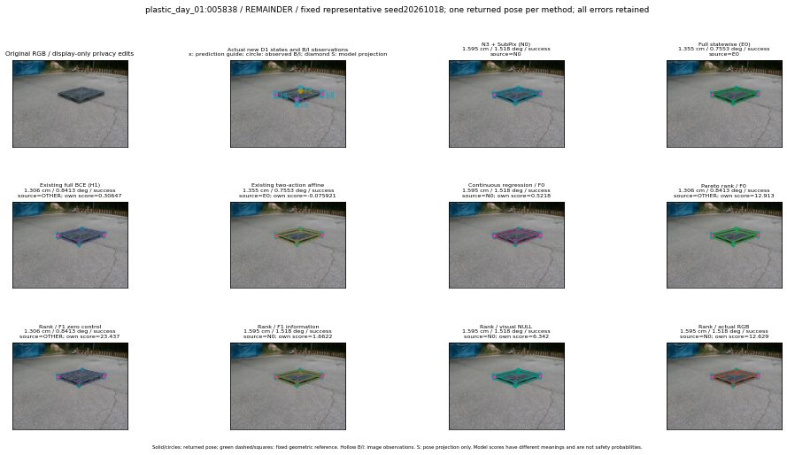

실선은 반환 자세, 초록 점선은 고정 기하 참조입니다. S는 영상 관측이 아닙니다. 점수는 모델별 의미가 다르며 보정된 안전 확률이 아닙니다. 개인정보 처리는 표시 사본에만 적용했습니다.
| 방법·seed | 위치 / 회전 / 공동성공 | 실제 출처 | 선택 후보 | 각 모델 자체 점수 |
|---|---|---|---|---|
| N0 | 1.595 cm / 1.518 deg / success | N0 | N/A | N/A |
| E0 | 1.355 cm / 0.7553 deg / success | E0 | N/A | N/A |
| E0_REGENERATED | 1.355 cm / 0.7553 deg / success | E0 | E0_REGENERATED | N/A |
| POSEFIX_SUBPIX_PF_ANCHOR | 0.9268 cm / 0.3988 deg / success | OTHER | N/A | N/A |
| POSEFIX_SUBPIX_YOLO_ANCHOR | 0.9268 cm / 0.3988 deg / success | OTHER | N/A | N/A |
| D1_H1_MLP_s20261018 | 1.306 cm / 0.8413 deg / success | OTHER | G10/ORIGINAL_WD/selected | 0.3064749240875244 |
| D1_H1_MLP_s20261019 | 1.306 cm / 0.8413 deg / success | OTHER | G10/ORIGINAL_WD/selected | 0.13380156457424164 |
| D1_H1_MLP_s20261020 | 1.306 cm / 0.8413 deg / success | OTHER | G10/ORIGINAL_WD/selected | -0.025422677397727966 |
| D1_H1_PAIR_MLP_s20261018 | 1.595 cm / 1.518 deg / success | N0 | N0 | -0.7392730116844177 |
| D1_H1_PAIR_MLP_s20261019 | 1.595 cm / 1.518 deg / success | N0 | N0 | -0.6741735935211182 |
| D1_H1_PAIR_MLP_s20261020 | 1.595 cm / 1.518 deg / success | N0 | N0 | -0.4564984142780304 |
| D1_H1_PAIR_ROLE_AFFINE_s20261018 | 1.355 cm / 0.7553 deg / success | E0 | E0_REGENERATED | -0.07592097669839859 |
| D1_H1_PAIR_ROLE_AFFINE_s20261019 | 1.355 cm / 0.7553 deg / success | E0 | E0_REGENERATED | -0.2807130515575409 |
| D1_H1_PAIR_ROLE_AFFINE_s20261020 | 1.595 cm / 1.518 deg / success | N0 | N0 | -0.12029378116130829 |
| R_CONT_F0_s20261018 | 1.595 cm / 1.518 deg / success | N0 | N0 | 0.52180415391922 |
| R_CONT_F0_s20261019 | 1.306 cm / 0.8413 deg / success | OTHER | G10/ORIGINAL_WD/selected | 0.6040359139442444 |
| R_CONT_F0_s20261020 | 1.306 cm / 0.8413 deg / success | OTHER | G10/ORIGINAL_WD/selected | 0.6054068803787231 |
| R_ORDER_F0_s20261018 | 1.306 cm / 0.8413 deg / success | OTHER | G10/ORIGINAL_WD/selected | 12.913012504577637 |
| R_ORDER_F0_s20261019 | 1.595 cm / 1.518 deg / success | N0 | N0 | 13.300734519958496 |
| R_ORDER_F0_s20261020 | 1.306 cm / 0.8413 deg / success | OTHER | G10/ORIGINAL_WD/selected | 3.456270456314087 |
| R_ORDER_F1_ZERO_s20261018 | 1.306 cm / 0.8413 deg / success | OTHER | G10/ORIGINAL_WD/selected | 23.436840057373047 |
| R_ORDER_F1_ZERO_s20261019 | 1.306 cm / 0.8413 deg / success | OTHER | G10/ORIGINAL_WD/selected | 31.760868072509766 |
| R_ORDER_F1_ZERO_s20261020 | 1.306 cm / 0.8413 deg / success | OTHER | G10/ORIGINAL_WD/selected | 14.461654663085938 |
| R_ORDER_F1_s20261018 | 1.595 cm / 1.518 deg / success | N0 | N0 | 1.662163257598877 |
| R_ORDER_F1_s20261019 | 1.595 cm / 1.518 deg / success | N0 | N0 | 9.80747127532959 |
| R_ORDER_F1_s20261020 | 1.595 cm / 1.518 deg / success | N0 | N0 | 3.21600604057312 |
| V_ORDER_NULL_s20261018 | 1.595 cm / 1.518 deg / success | N0 | N0 | 6.341954231262207 |
| V_ORDER_NULL_s20261019 | 1.595 cm / 1.518 deg / success | N0 | N0 | 4.614698886871338 |
| V_ORDER_NULL_s20261020 | 1.306 cm / 0.8413 deg / success | OTHER | G10/ORIGINAL_WD/selected | 6.4731926918029785 |
| V_ORDER_RGB_s20261018 | 1.595 cm / 1.518 deg / success | N0 | N0 | 12.628994941711426 |
| V_ORDER_RGB_s20261019 | 1.595 cm / 1.518 deg / success | N0 | N0 | 4.264471530914307 |
| V_ORDER_RGB_s20261020 | 1.595 cm / 1.518 deg / success | N0 | N0 | -7.495758533477783 |